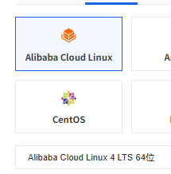
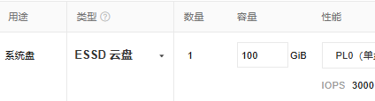
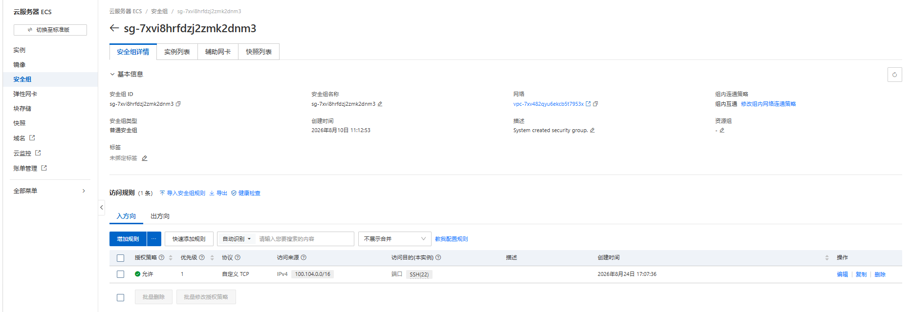

第1天：购买 ECS 与安装完整环境
第1天：购买 ECS 与安装完整环境
版本：学生实操版 V1.0
适用环境：Alibaba Cloud Linux 4、4 vCPU、8 GiB 内存、100 GiB 系统盘
今日目标：完成 Java 11、Hadoop 3.3.6、MariaDB 10.6、Hive 4.0.1、Java 17、Spark 4.2.0 和 DataX 202308 的安装与联通验证。
文档说明：请从步骤1开始顺序执行，不要跳步。每个步骤都写明了“为什么做、复制什么、看到什么才算成功”。曾经实操遇到的问题已改成正确配置直接放在对应步骤中，不要求学生先执行错误操作。
一、开始前先认识今天的服务器
项目一使用一台单节点 ECS。HDFS 保存数据文件；MariaDB 同时保存 Hive 元数据和最终 ADS 结果；Hive 提供数仓表；Spark 完成清洗与汇总；DataX 负责把 CSV 写入 HDFS。
今天只搭环境，不处理全量业务数据。不要开放3306、9000、9083、10000等端口到公网。
二、购买 ECS
步骤1：进入 ECS 自定义购买页
登录阿里云控制台，进入“云服务器 ECS”，单击“创建实例”，选择“自定义购买”。
自定义购买允许我们固定 CPU、内存、系统、磁盘和网络。不要使用配置过低的快速购买模板。
步骤2：选择计费方式和地域
教学实验建议选择“按量付费”。地域选择离自己较近的中国内地地域；本项目实测使用广州地域。
按量付费实例不用时可以选择“节省停机模式”。停止后计算资源不再计费，但云盘仍可能产生少量费用。不要点击“释放实例”。
步骤3：选择实例规格
选择：
4 vCPU
8 GiB 内存
x86_64
不要选择2核4G。本项目同机运行 HDFS、Hive、Spark、DataX 和 MariaDB，4G内存容易出现进程被系统杀死。
步骤4：选择操作系统和系统盘
选择公共镜像：
Alibaba Cloud Linux 4
x86_64
系统盘选择 ESSD，容量填写：
100 GiB
实测全链路完成后系统盘约使用19 GiB，100 GiB 能保留中间数据、日志和备份。
步骤5：设置网络和登录用户
使用默认 VPC 和交换机，分配公网 IPv4。登录用户选择：
ecs-user
“登录凭据”就是服务器确认登录者身份的方法。为了让全班操作一致，本实验统一选择：
登录凭据：自定义密码
登录用户名：ecs-user
按照页面要求设置 ECS 登录密码，并由学生本人妥善保存。这个密码只用于登录服务器，不是后面创建的 MariaDB 密码；不要把密码写进实验报告、截图或聊天记录。
安全组使用购买页面自动创建或默认选中的“普通安全组”即可，不要求学生自己填写安全组名称，也不在购买页面手工增加规则。后面会先清空它的入方向规则，再由 Workbench 自动添加正确规则。
步骤6：创建实例并清空入方向规则
确认配置后创建实例。返回实例列表，等待：
实例状态：运行中
健康状态：正常
实例开始运行后，先不要登录 Workbench。按照下面的顺序打开安全组：
ECS控制台
→ 实例
→ 找到刚创建的实例
→ 单击实例ID
→ 安全组
→ 单击当前实例关联的安全组
→ 管理规则
→ 入方向
确认当前选中的是“入方向”，勾选列表中的全部入方向规则，单击“批量删除”，再确认删除。删除完成后，入方向列表应显示0条规则。
访问规则（0条）
这里说的“全部删除”只指当前页面的入方向规则：不要删除安全组本身，不要进入“出方向”执行删除，也不要解绑实例和安全组。入方向暂时为0条是正常状态，下一步由 Workbench 自动补回唯一需要的SSH规则。





三、登录 Workbench 并检查服务器
步骤7：打开 Workbench
在实例操作列单击“远程连接”，找到“通过 Workbench 远程连接”，单击“立即登录”。使用 ecs-user 登录。
因为刚才已经清空入方向规则，页面会提示需要添加安全组规则或放行 Workbench IP。直接单击“一键添加”或“添加规则”，让 Workbench 自动完成，不要自己填写IP地址和端口。
如果页面要求输入连接信息，填写：
用户名：ecs-user
认证方式：密码认证
密码：购买 ECS 时设置的登录密码
端口：22
看到类似下面的提示符，说明已经进入服务器：
[ecs-user@主机名 ~]$
如果提示符以 root@ 开头，请退出并重新使用 ecs-user 登录。后续学生文件全部归 ecs-user 所有。
登录成功后返回“安全组 → 管理规则 → 入方向”检查。最终应当只有 Workbench 自动添加的这一条：
允许｜优先级1｜自定义TCP｜100.104.0.0/16｜SSH(22)
如果与上面一致，安全组配置完成，不再修改。100.104.0.0/16 是 Workbench 私网连接使用的来源范围，不是面向整个公网的 0.0.0.0/0。
为什么项目一只需要这一条：学生只需要通过Workbench的SSH 22进入服务器。MariaDB 3306、HDFS 9000、Hive Metastore 9083和HiveServer2 10000都在同一台ECS内部通信，不需要添加公网入方向规则。
步骤8：确认当前用户
发送：
whoami
这条命令用于确认当前登录身份。
预期输出：
ecs-user
步骤9：检查 CPU
发送：
nproc
nproc 会显示操作系统可见的 CPU 核心数。
预期输出：
4
步骤10：检查内存和磁盘
发送：
free -h
预期可用总内存约7.3 GiB。继续发送：
df -h /
预期系统盘总容量约99 GiB。云盘标称100 GiB，格式化后显示约99 GiB是正常现象。
步骤11：检查系统和 Python
发送：
cat /etc/os-release | head -n 5
输出中应包含 Alibaba Cloud Linux 4。继续发送：
python3 --version
实测版本为：
Python 3.11.6
四、认识并上传项目一学生包
本项目采用“西北太平洋五年期轻量化方案”，不是把原始全球海洋与船舶数据全部上传到个人 ECS。教学数据已经按下列范围裁剪：
时间：2017—2021年，共5年
空间：西北太平洋，10°N—50°N、120°E—160°E
海洋数据：300个NC文件，覆盖60个月和5项指标
船舶数据：2017—2021年5个年度ZIP，每年抽取1、4、7、10月
这样仍然保留 NC、NPZ、ZIP 内 CSV 等真实异构格式，也能完整练习转换、DataX、Hive、Spark和MariaDB，同时把数据量控制在4核8G学生服务器能够完成的范围内。
学生正式使用两个 ZIP，每个 ZIP 都配有一个同名 SHA256 校验文件：
| 文件 | 里面是什么 | 为什么要上传 |
|---|---|---|
OceanInsight-project1-source.zip |
300个裁剪NC、NPZ教学样本、5个年度船舶ZIP、匹配后的船舶主数据和源数据清单 | 它是学生真正要解析和转换的数据输入；第2天开始使用 |
OceanInsight-project1-source.sha256 |
source.zip的数字指纹 |
检查大文件上传后有没有损坏 |
OceanInsight-project1-starter.zip |
Python项目骨架、5个TODO、测试、配置模板、DataX模板、Hive/MariaDB SQL和云端运行脚本 | 学生在这个代码包中补TODO，并用其中脚本完成四天全链路；第1天安装环境时就要读取配置模板 |
OceanInsight-project1-starter.sha256 |
starter.zip的数字指纹 |
检查代码包上传后有没有损坏 |
Starter 不是答案包。它保留5处必须由学生完成的TODO，不包含教师答案；solution.zip只由教师保管，不发给学生。
步骤12：上传 Source、Starter 和两个校验文件
第1天就把四个学生文件一次上传完：
OceanInsight-project1-source.zip
OceanInsight-project1-source.sha256
OceanInsight-project1-starter.zip
OceanInsight-project1-starter.sha256
在 Workbench 左侧打开文件管理器，进入 /home/ecs-user，新建目录：
oceaninsight-project1/packages
把四个文件上传到该目录。source.zip约208 MiB，上传时间会比Starter长；文件任务中心显示绿色“完成”后再继续。关闭文件任务中心或刷新页面前，必须先确认四个文件都完成。
步骤13：校验 Source 和 Starter
发送：
cd /home/ecs-user/oceaninsight-project1/packages
这条命令把当前目录切换到上传目录。继续发送：
sha256sum -c OceanInsight-project1-source.sha256
预期输出：
OceanInsight-project1-source.zip: OK
继续发送：
sha256sum -c OceanInsight-project1-starter.sha256
SHA256 用于确认文件没有在上传过程中损坏。两个校验必须都出现 OK；如果显示 FAILED，不要解压，重新上传对应ZIP后再校验。
预期输出：
OceanInsight-project1-starter.zip: OK
步骤14：通过临时目录完整解压 Starter
发送：
cd /home/ecs-user/oceaninsight-project1
先确认正式目录还不存在：
test ! -e starter && echo 'STARTER_TARGET_READY=YES'
必须看到 STARTER_TARGET_READY=YES。继续发送下面的完整代码块：
(
set -e
STARTER_STAGE=$(mktemp -d \
/home/ecs-user/oceaninsight-project1/starter_extracting.XXXXXX)
python3 -m zipfile -e \
packages/OceanInsight-project1-starter.zip \
"$STARTER_STAGE"
test -f "$STARTER_STAGE/pyproject.toml"
test -d "$STARTER_STAGE/conf/cloud-final"
test "$(find "$STARTER_STAGE/conf/cloud-final" -maxdepth 1 -type f | wc -l)" -eq 8
touch "$STARTER_STAGE/.extract_verify"
mv "$STARTER_STAGE" starter
echo 'STARTER_EXTRACT_VERIFY=PASS'
)
必须看到 STARTER_EXTRACT_VERIFY=PASS。Alibaba Cloud Linux 4可能没有 unzip，因此使用Python标准库。先解压到随机临时目录，全部检查通过后才改名为 starter；即使Workbench中断，也不会把半成品误认为正式目录。
验证配置模板：
find starter/conf/cloud-final -maxdepth 1 -type f -printf '%f\n' | sort
预期至少看到 Hadoop、Hive、Spark、DataX 和两个 systemd service 模板。
五、安装基础软件、Java 11 和 MariaDB
步骤15：安装基础软件
发送：
sudo dnf -y install python3 python3-pip curl wget tar gzip rsync openssl
这些工具分别用于 Python 环境、下载、解压、同步文件和生成随机密码。
看到 Complete! 表示安装完成。
步骤16：安装 Java 11
发送：
sudo dnf -y install java-11-openjdk-devel
Hadoop、Hive 和 DataX 使用 Java 11。安装完成后发送：
java -version
预期第一行包含 Java 11。继续建立固定路径：
JAVA11_HOME=$(dirname "$(dirname "$(readlink -f "$(command -v java)")")")
这条命令自动找到当前 Java 11 的真实安装目录，并保存到临时变量。发送：
sudo ln -sfn "$JAVA11_HOME" /opt/java
后续组件统一使用 /opt/java，避免依赖带补丁号的目录名。
步骤17：安装并启动 MariaDB
发送：
sudo dnf -y install mariadb-server
继续发送：
sudo systemctl enable --now mariadb
enable 表示开机启动，--now 表示现在立刻启动。验证：
sudo systemctl is-active mariadb
预期输出：
active
步骤18：建立私有密码目录
发送：
mkdir -p "$HOME/.config/oceaninsight"
发送：
chmod 700 "$HOME/.config/oceaninsight"
该目录只允许 ecs-user 自己访问。
步骤19：生成数据库随机密码
发送：
HIVE_DB_PASSWORD=$(openssl rand -base64 24 | tr -d '\n')
发送：
ADS_DB_PASSWORD=$(openssl rand -base64 24 | tr -d '\n')
密码只保存在当前 Shell 变量中，命令不会把密码打印到屏幕。
步骤20：创建数据库和本地账户
发送以下完整代码块：
sudo mariadb <<SQL
CREATE DATABASE IF NOT EXISTS hive_metastore
CHARACTER SET utf8mb4 COLLATE utf8mb4_unicode_ci;
CREATE DATABASE IF NOT EXISTS ocean_insight_ads
CHARACTER SET utf8mb4 COLLATE utf8mb4_unicode_ci;
CREATE USER IF NOT EXISTS 'hive_user'@'localhost'
IDENTIFIED BY '${HIVE_DB_PASSWORD}';
CREATE USER IF NOT EXISTS 'ads_writer'@'localhost'
IDENTIFIED BY '${ADS_DB_PASSWORD}';
GRANT ALL PRIVILEGES ON hive_metastore.*
TO 'hive_user'@'localhost';
GRANT ALL PRIVILEGES ON ocean_insight_ads.*
TO 'ads_writer'@'localhost';
FLUSH PRIVILEGES;
SQL
两个账户都只允许 localhost 登录，数据库没有对公网开放。
步骤21：写入权限600的私有 CNF
发送：
umask 077
umask 077 保证新文件默认只有本人可读写。发送：
printf '[client]\nhost=127.0.0.1\nport=3306\nuser=hive_user\npassword=%s\n' \
"$HIVE_DB_PASSWORD" > "$HOME/.config/oceaninsight/hive-db.cnf"
发送：
printf '[client]\nhost=127.0.0.1\nport=3306\nuser=ads_writer\npassword=%s\n' \
"$ADS_DB_PASSWORD" > "$HOME/.config/oceaninsight/ads-db.cnf"
发送：
chmod 600 "$HOME/.config/oceaninsight/hive-db.cnf" \
"$HOME/.config/oceaninsight/ads-db.cnf"
立即清除临时变量：
unset HIVE_DB_PASSWORD ADS_DB_PASSWORD
不要执行 cat ~/.config/oceaninsight/*.cnf。只检查权限：
stat -c '%a %n' "$HOME/.config/oceaninsight/"*.cnf
两个文件都必须显示 600。
六、安装 Hadoop 3.3.6
步骤22：下载 Hadoop 主包
发送：
cd /tmp
发送：
curl -fL --retry 3 \
-o hadoop-3.3.6.tar.gz \
http://mirrors.cloud.aliyuncs.com/apache/hadoop/core/hadoop-3.3.6/hadoop-3.3.6.tar.gz
广州 ECS 实测使用阿里云 VPC 镜像速度稳定。不要从 archive.apache.org 下载约696 MiB主包，实测可能只有约12 KiB/s。
步骤23：下载并校验 SHA512
发送：
curl -fL --retry 3 \
-o hadoop-3.3.6.tar.gz.sha512 \
https://downloads.apache.org/hadoop/common/hadoop-3.3.6/hadoop-3.3.6.tar.gz.sha512
发送：
sed 's/hadoop-3.3.6-RC1.tar.gz/hadoop-3.3.6.tar.gz/' \
hadoop-3.3.6.tar.gz.sha512 | sha512sum -c -
官方校验文件内部名称带 RC1，正式包名不带。这里先替换文件名再校验，避免学生看到假失败。
预期输出：
hadoop-3.3.6.tar.gz: OK
步骤24：解压并建立固定软链接
发送：
sudo tar -xzf hadoop-3.3.6.tar.gz -C /opt
发送：
sudo ln -sfn /opt/hadoop-3.3.6 /opt/hadoop
发送：
sudo chown -R ecs-user:ecs-user /opt/hadoop-3.3.6
步骤25：配置 Hadoop 环境变量
发送以下代码块：
sudo tee /etc/profile.d/oceaninsight-hadoop.sh >/dev/null <<'EOF'
export JAVA_HOME=/opt/java
export HADOOP_HOME=/opt/hadoop
export HADOOP_CONF_DIR=/opt/hadoop/etc/hadoop
export PATH=$JAVA_HOME/bin:$HADOOP_HOME/bin:$HADOOP_HOME/sbin:$PATH
EOF
让当前终端立即生效：
source /etc/profile.d/oceaninsight-hadoop.sh
验证：
hadoop version | head -n 1
预期输出包含 Hadoop 3.3.6。
步骤26：创建 HDFS 本地数据目录
发送：
sudo mkdir -p /data/oceaninsight/hdfs/{namenode,datanode,tmp,logs,pids}
发送：
sudo chown -R ecs-user:ecs-user /data/oceaninsight
发送：
chmod 750 /data/oceaninsight
步骤27：复制 HDFS 最终配置
发送：
cp starter/conf/cloud-final/hadoop-core-site.xml \
/opt/hadoop/etc/hadoop/core-site.xml
发送：
cp starter/conf/cloud-final/hadoop-hdfs-site.xml \
/opt/hadoop/etc/hadoop/hdfs-site.xml
这两个文件已经包含实测成功参数：HDFS地址 localhost:9000、副本1、独立 NameNode/DataNode 目录和仅本机开放的9870管理端口。
步骤28：追加 Hadoop 进程参数
发送：
cat >> /opt/hadoop/etc/hadoop/hadoop-env.sh <<'EOF'
export JAVA_HOME=/opt/java
export HADOOP_LOG_DIR=/data/oceaninsight/hdfs/logs
export HADOOP_PID_DIR=/data/oceaninsight/hdfs/pids
export HADOOP_HEAPSIZE_MAX=512
EOF
HADOOP_HEAPSIZE_MAX=512 限制 Hadoop 堆内存，给同机 Hive、Spark 和 MariaDB 留出空间。
步骤29：首次且仅首次格式化 NameNode
发送：
hdfs namenode -format oceaninsight
这是今天唯一一次允许执行格式化。格式化工具末尾出现 SHUTDOWN_MSG: Shutting down NameNode 是正常结束，不是失败。
安全红线：从明天开始，任何情况下都不要再次执行
hdfs namenode -format。重复格式化会让现有 HDFS 元数据失效。
步骤30：启动 NameNode 和 DataNode
发送：
hdfs --daemon start namenode
发送：
hdfs --daemon start datanode
等待5秒：
sleep 5
验证进程：
jps
预期至少看到：
NameNode
DataNode
Jps
步骤31：创建项目 HDFS 目录
发送：
hdfs dfs -mkdir -p \
/oceaninsight/raw \
/oceaninsight/ods \
/oceaninsight/dwd \
/oceaninsight/dws \
/oceaninsight/ads \
/oceaninsight/tmp \
/oceaninsight/warehouse
发送：
hdfs dfs -ls /oceaninsight
必须能列出刚创建的目录。
七、安装 Hive 4.0.1
步骤32：下载 Hive
发送：
cd /tmp
发送：
curl -fL --retry 5 --retry-delay 3 \
-o apache-hive-4.0.1-bin.tar.gz \
https://mirrors.huaweicloud.com/apache/hive/hive-4.0.1/apache-hive-4.0.1-bin.tar.gz
华为镜像是本项目实测成功路线，约1.2 MiB/s。等待当前命令完成，不要同时启动第二个下载任务。
步骤33：下载校验文件并校验 Hive
发送：
curl -fL --retry 3 \
-o apache-hive-4.0.1-bin.tar.gz.sha256 \
https://downloads.apache.org/hive/hive-4.0.1/apache-hive-4.0.1-bin.tar.gz.sha256
发送：
sha256sum -c apache-hive-4.0.1-bin.tar.gz.sha256
只有看到 OK 才继续。
步骤34：解压 Hive 并建立软链接
发送：
sudo tar -xzf apache-hive-4.0.1-bin.tar.gz -C /opt
发送：
sudo ln -sfn /opt/apache-hive-4.0.1-bin /opt/hive
发送：
sudo chown -R ecs-user:ecs-user /opt/apache-hive-4.0.1-bin
步骤35：安装 MySQL Connector/J 8.4.0
发送：
cd /tmp
发送：
curl -fL --retry 3 \
-o mysql-connector-j-8.4.0.jar \
https://repo1.maven.org/maven2/com/mysql/mysql-connector-j/8.4.0/mysql-connector-j-8.4.0.jar
发送：
cp mysql-connector-j-8.4.0.jar /opt/hive/lib/
该驱动让 Hive Metastore 和后续 Spark JDBC 能连接 MariaDB。
步骤36：配置 Hive 环境变量
发送：
sudo tee /etc/profile.d/oceaninsight-hive.sh >/dev/null <<'EOF'
export HIVE_HOME=/opt/hive
export HIVE_CONF_DIR=/opt/hive/conf
export PATH=$HIVE_HOME/bin:$PATH
EOF
发送：
source /etc/profile.d/oceaninsight-hive.sh
步骤37：复制 Hive 最终配置模板
发送：
cp starter/conf/cloud-final/hive-site.xml /opt/hive/conf/hive-site.xml
发送：
cp starter/conf/cloud-final/metastore-site.xml /opt/hive/conf/metastore-site.xml
模板已经预先包含两个通知接口兼容键。缺少兼容键时 HiveServer2 可能显示 active，却每60秒重试且不监听10000端口。
步骤38：将私有密码写入 Hive 配置
发送完整代码块：
python3 - <<'PY'
import configparser
from pathlib import Path
cnf = Path.home() / '.config/oceaninsight/hive-db.cnf'
site = Path('/opt/hive/conf/hive-site.xml')
config = configparser.RawConfigParser()
if not config.read(cnf, encoding='utf-8'):
raise SystemExit('无法读取 hive-db.cnf')
password = config['client']['password']
text = site.read_text(encoding='utf-8')
marker = '__REDACTED_PASSWORD__'
if marker not in text:
raise SystemExit('Hive模板中未找到密码占位符')
site.write_text(text.replace(marker, password), encoding='utf-8')
print('HIVE_PASSWORD_INJECT=PASS')
PY
脚本只从权限600的 CNF 读取密码并替换占位符，不打印密码。看到 HIVE_PASSWORD_INJECT=PASS 即可。
立即限制两个Hive配置文件的权限：
chmod 600 /opt/hive/conf/hive-site.xml \
/opt/hive/conf/metastore-site.xml
stat -c '%a %U %n' /opt/hive/conf/hive-site.xml \
/opt/hive/conf/metastore-site.xml
两个文件都必须显示权限 600、所有者 ecs-user。
步骤39：初始化 Hive Metastore
发送：
/opt/hive/bin/schematool -dbType mysql -initSchema
预期关键输出：
Initialization script completed
schemaTool completed
MariaDB 中约83张元数据表、Schema版本4.0.0与 Hive 4.0.1 发行包兼容。
步骤40：安装 Hive 两个 systemd 服务
发送：
sudo mkdir -p /data/oceaninsight/hive/{logs,pids}
发送：
sudo chown -R ecs-user:ecs-user /data/oceaninsight/hive
发送：
sudo cp starter/conf/cloud-final/oceaninsight-hive-metastore.service \
/etc/systemd/system/
发送：
sudo cp starter/conf/cloud-final/oceaninsight-hiveserver2.service \
/etc/systemd/system/
HiveServer2 模板已经把 PID 写到 /data/oceaninsight/hive/pids，不会尝试写入只允许 root 修改的 /opt/hive/conf。
步骤41：启动 Metastore
发送：
sudo systemctl daemon-reload
发送：
sudo systemctl enable --now oceaninsight-hive-metastore
等待10秒：
sleep 10
发送：
sudo ss -lntp | grep ':9083'
看到 127.0.0.1:9083 才继续。
步骤42：启动 HiveServer2
发送：
sudo systemctl enable --now oceaninsight-hiveserver2
HiveServer2 首次启动需要时间。发送下面的等待循环：
for i in {1..12}; do
if sudo ss -lntp | grep -q ':10000'; then
echo 'HiveServer2 已启动'
break
fi
echo "等待 HiveServer2：第 ${i}/12 次检查"
sleep 10
done
不要只看 systemd 的 active。进程可能存在，但还没有真正监听端口。
步骤43：用 Beeline 验证 SQL
发送：
beeline -u 'jdbc:hive2://127.0.0.1:10000/default' \
-n ecs-user \
--silent=true \
--showHeader=true \
--outputformat=table \
-e 'SHOW DATABASES;'
预期至少返回 default。SLF4J 多绑定警告不影响运行，不要为了消除提示删除 JAR。
八、安装 Java 17 和 Spark 4.2.0
步骤44：安装 Java 17
发送：
sudo dnf -y install java-17-openjdk-devel
验证 Java 17：
/usr/lib/jvm/java-17/bin/java -version
再检查系统默认 Java：
java -version
前者必须是17，后者必须仍是11。Spark 4.2使用Java 17；Hadoop、Hive和DataX继续使用Java 11。不要运行 alternatives --config java。
步骤45：下载并校验 Spark
发送：
cd /tmp
发送：
curl -fL --retry 5 --retry-delay 3 \
-o spark-4.2.0-bin-hadoop3.tgz \
https://downloads.apache.org/spark/spark-4.2.0/spark-4.2.0-bin-hadoop3.tgz
发送：
curl -fL --retry 3 \
-o spark-4.2.0-bin-hadoop3.tgz.sha512 \
https://downloads.apache.org/spark/spark-4.2.0/spark-4.2.0-bin-hadoop3.tgz.sha512
发送：
sha512sum -c spark-4.2.0-bin-hadoop3.tgz.sha512
看到 OK 才继续。
步骤46：解压 Spark
发送：
sudo tar -xzf spark-4.2.0-bin-hadoop3.tgz -C /opt
发送：
sudo ln -sfn /opt/spark-4.2.0-bin-hadoop3 /opt/spark
发送：
sudo chown -R ecs-user:ecs-user /opt/spark-4.2.0-bin-hadoop3
步骤47：复制 Spark 最终配置
发送：
cp starter/conf/cloud-final/spark-defaults.conf /opt/spark/conf/spark-defaults.conf
配置固定为 local[4]、Driver 2 GiB、默认并行度4、Shuffle分区8、关闭Spark UI。
步骤48：让 Spark 使用现有 Hadoop 和 Hive 配置
发送：
ln -sfn /opt/hive/conf/hive-site.xml /opt/spark/conf/hive-site.xml
发送：
ln -sfn /opt/hadoop/etc/hadoop/core-site.xml /opt/spark/conf/core-site.xml
发送：
ln -sfn /opt/hadoop/etc/hadoop/hdfs-site.xml /opt/spark/conf/hdfs-site.xml
Spark 通过软链接读取已经验证的配置，不复制或显示其中的数据库密码。
步骤49：建立 Spark 临时目录和环境变量
发送：
mkdir -p /data/oceaninsight/spark/local
发送：
sudo tee /etc/profile.d/oceaninsight-spark.sh >/dev/null <<'EOF'
export SPARK_HOME=/opt/spark
export PATH=$SPARK_HOME/bin:$PATH
EOF
发送：
source /etc/profile.d/oceaninsight-spark.sh
步骤50：验证 Spark 版本
发送：
JAVA_HOME=/usr/lib/jvm/java-17 spark-submit --version
预期看到 Spark 4.2.0 和 Java 17。下面三个提示不影响本项目：
Using incubator modules；Unable to load native-hadoop library；spark.local.dir will be overridden...。
步骤51：运行4线程 Pi 测试
发送：
JAVA_HOME=/usr/lib/jvm/java-17 spark-submit \
--master 'local[4]' \
/opt/spark/examples/src/main/python/pi.py \
20
预期输出包含 Pi is roughly，进程退出码为0。日志同时调度任务0、1、2、3，说明4个本地线程参与执行。
九、安装 DataX 202308
步骤52：下载 DataX
发送：
cd /tmp
发送：
curl -fL \
--retry 5 \
--retry-delay 3 \
--retry-all-errors \
-C - \
-o datax-202308.tar.gz \
'https://datax-opensource.oss-cn-hangzhou.aliyuncs.com/202308/datax.tar.gz'
DataX 包约1.6 GiB。-C - 表示断点续传；Workbench 断开后重新执行同一条命令即可，不要删除已经下载的部分。
步骤53：校验 DataX
发送：
gzip -t datax-202308.tar.gz
命令没有输出且返回提示符，表示 gzip 结构完整。继续发送：
sha256sum datax-202308.tar.gz
实测值必须是：
e925d0873e78aea28bf47b96866d127faacdc5a993ef1a92e25189151d5e1aa1
步骤54：解压并配置 DataX
发送：
sudo mkdir -p /opt/datax
发送：
sudo tar -xzf datax-202308.tar.gz -C /opt/datax --strip-components=1
发送：
sudo chown -R ecs-user:ecs-user /opt/datax
发送：
cp /home/ecs-user/oceaninsight-project1/starter/conf/cloud-final/datax-core.json \
/opt/datax/conf/core.json
最终 JVM 为 -Xms512m -Xmx1G。后续教学作业仍在每个 Job 中设置单通道，避免抢占同机服务资源。
步骤55：建立 DataX 命令
发送：
sudo tee /usr/local/bin/datax >/dev/null <<'EOF'
#!/usr/bin/env bash
exec /opt/datax/bin/datax.py "$@"
EOF
发送：
sudo chmod 755 /usr/local/bin/datax
这条命令只是给 DataX 官方启动脚本增加一个较短的入口。以后输入 datax 作业文件.json，实际仍由 /opt/datax/bin/datax.py 执行，避免手工拼接 Java classpath。
步骤56：运行 DataX 官方自检
发送：
/opt/datax/bin/datax.py /opt/datax/job/job.json
预期关键结果：
读出记录总数 : 100000
读写失败总数 : 0
日志中的 totalPhysicalMemory=-0.00G 或 CPU -1.00% 是旧监控代码在 Java 11 上无法取得部分指标，不是任务失败，不要为此更换 Java。
步骤57：确认四个 DataX 插件
发送：
for p in txtfilereader hdfswriter hdfsreader mysqlwriter; do
test -d "/opt/datax/plugin/reader/$p" \
-o -d "/opt/datax/plugin/writer/$p" \
&& echo "$p=OK" \
|| echo "$p=MISSING"
done
四项都必须是 OK。
十、第1天最终验收
步骤58：检查全部进程和服务
发送：
jps
预期看到 NameNode、DataNode 和两个 Hive RunJar。继续发送：
sudo systemctl is-active \
mariadb \
oceaninsight-hive-metastore \
oceaninsight-hiveserver2
三行都应是 active。
步骤59：检查端口
发送：
sudo ss -lntp | grep -E ':(3306|9000|9083|10000)\b'
3306、9083和10000必须只监听本机地址；9000是本机 HDFS RPC。
步骤60：最终 SQL 和目录检查
发送：
hdfs dfs -ls /oceaninsight
发送：
beeline -u 'jdbc:hive2://127.0.0.1:10000/default' \
-n ecs-user \
-e 'SHOW DATABASES;'
发送：
JAVA_HOME=/usr/lib/jvm/java-17 spark-submit --version
十一、第1天验收表
| 验收项 | 执行方法 | 通过标准 |
|---|---|---|
| ECS规格 | nproc、free -h、df -h / |
4核、约7.3 GiB、约99 GiB |
| Java 11 | java -version |
系统默认为11 |
| HDFS | jps、hdfs dfs -ls /oceaninsight |
NameNode/DataNode存在，目录可列出 |
| MariaDB | systemctl is-active mariadb |
active，仅本机3306 |
| Hive | 端口和 Beeline | 9083/10000监听，SQL可执行 |
| Java 17 | /usr/lib/jvm/java-17/bin/java -version |
版本17 |
| Spark | spark-submit --version、Pi |
Spark 4.2.0，退出码0 |
| DataX | 官方 job.json | 100,000条，失败0 |
全部通过后，第1天完成。
十二、当天结束与下次启动
如果使用按量付费实例，可以在控制台选择“停止实例→节省停机模式”。不要释放实例。
下次启动后，MariaDB 和两个 Hive systemd 服务可能显示 active，但 HDFS 不会自动恢复。正确顺序是：只启动已有 NameNode/DataNode，确认 /oceaninsight 可读，再重启 HiveServer2。绝对不要再次格式化 NameNode。第2天开头会逐条执行恢复检查。